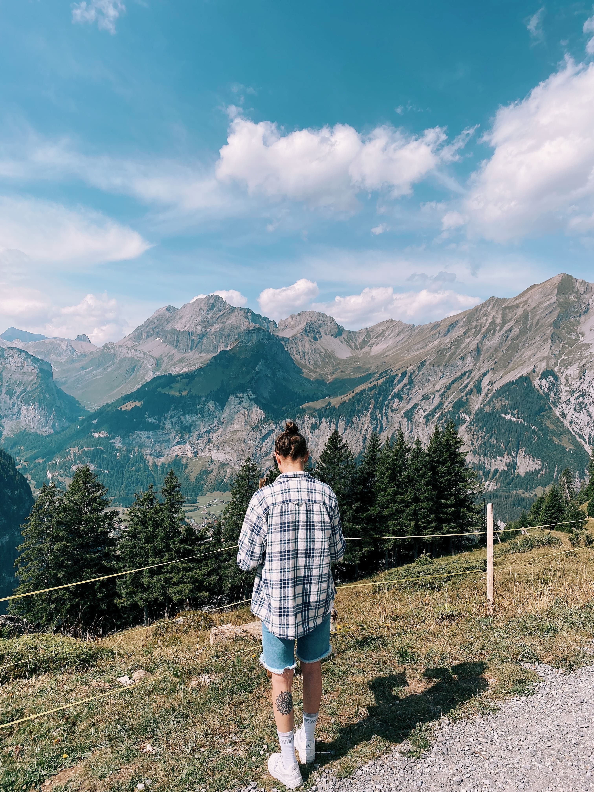
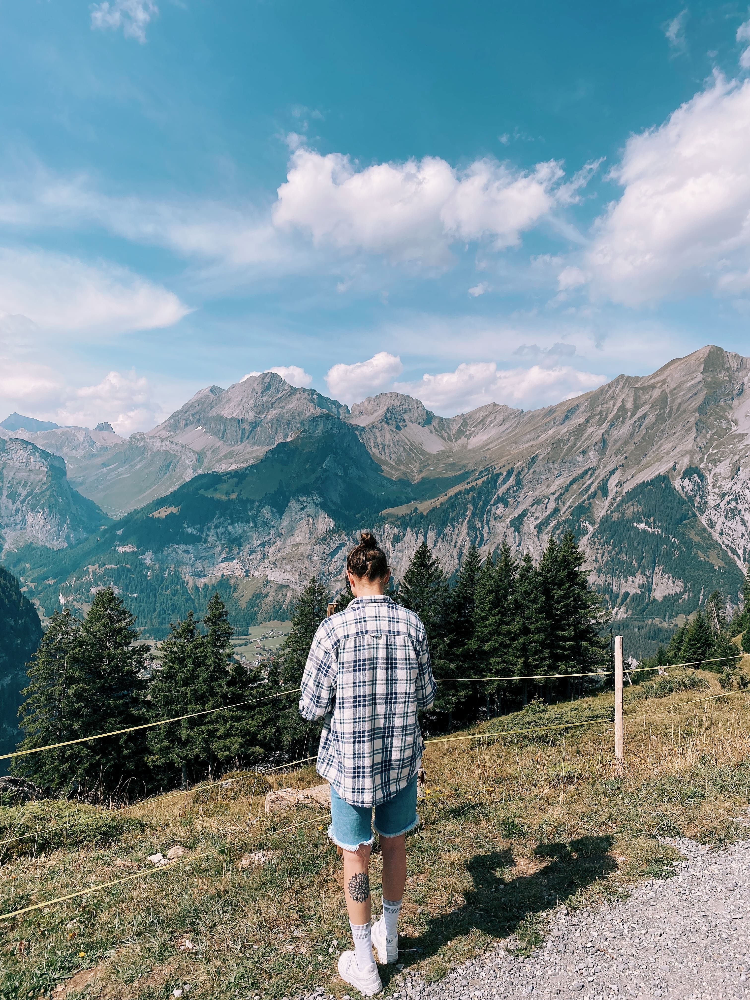
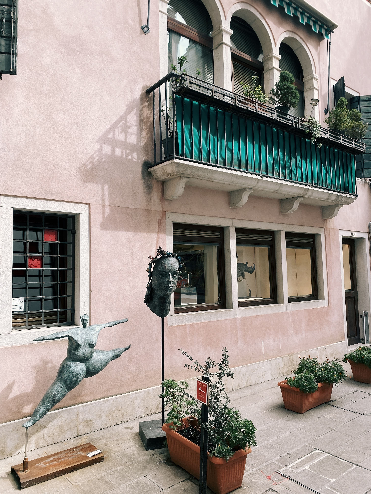
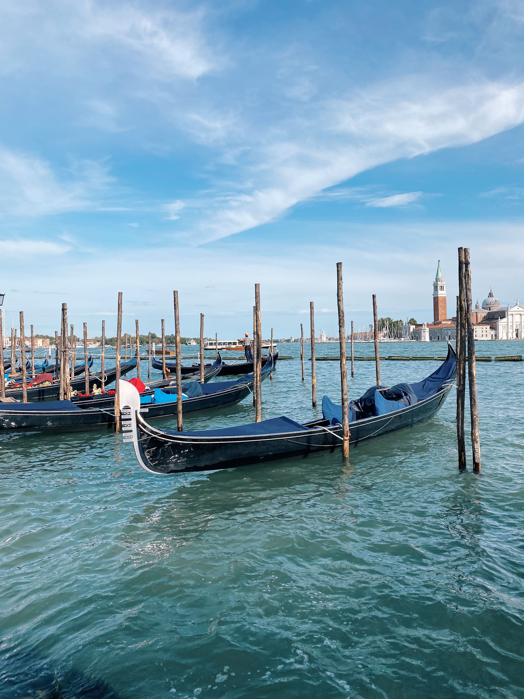
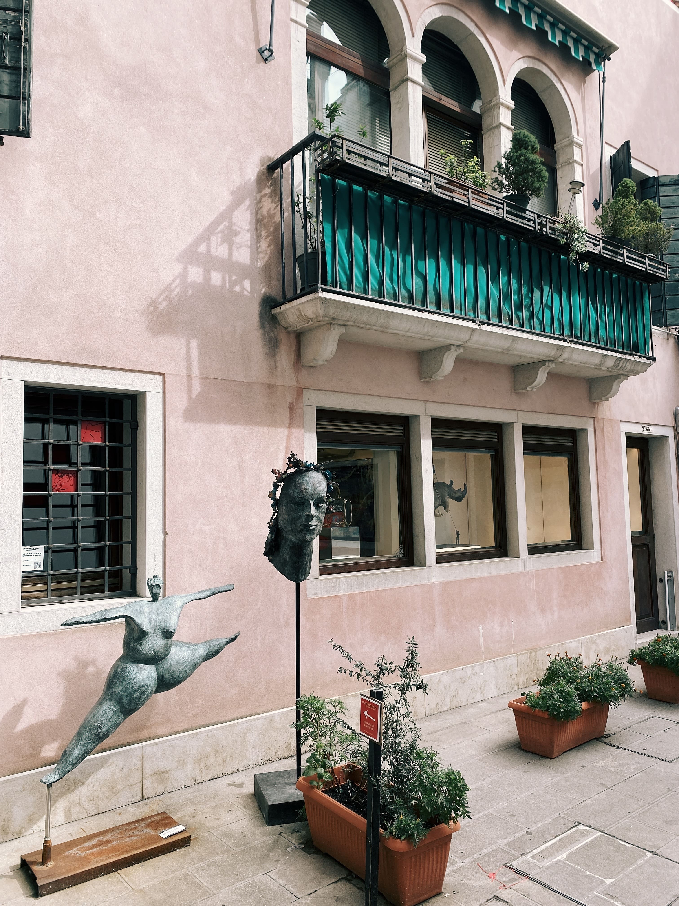
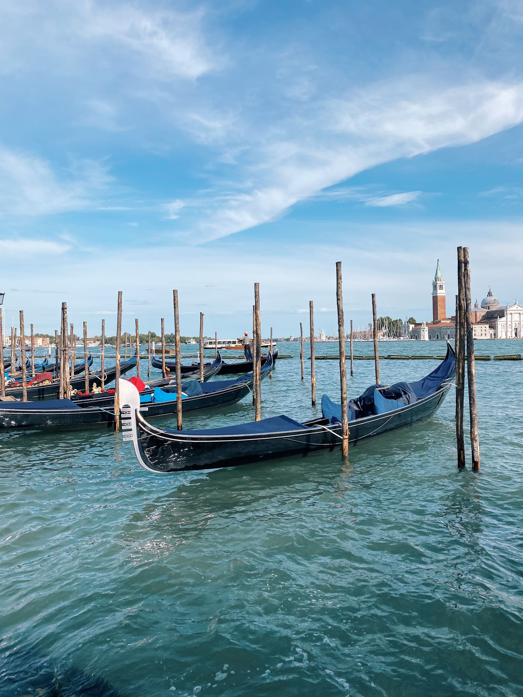
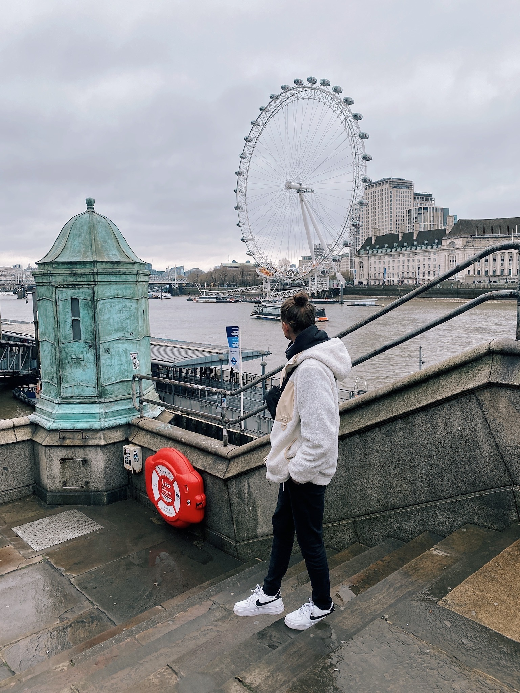
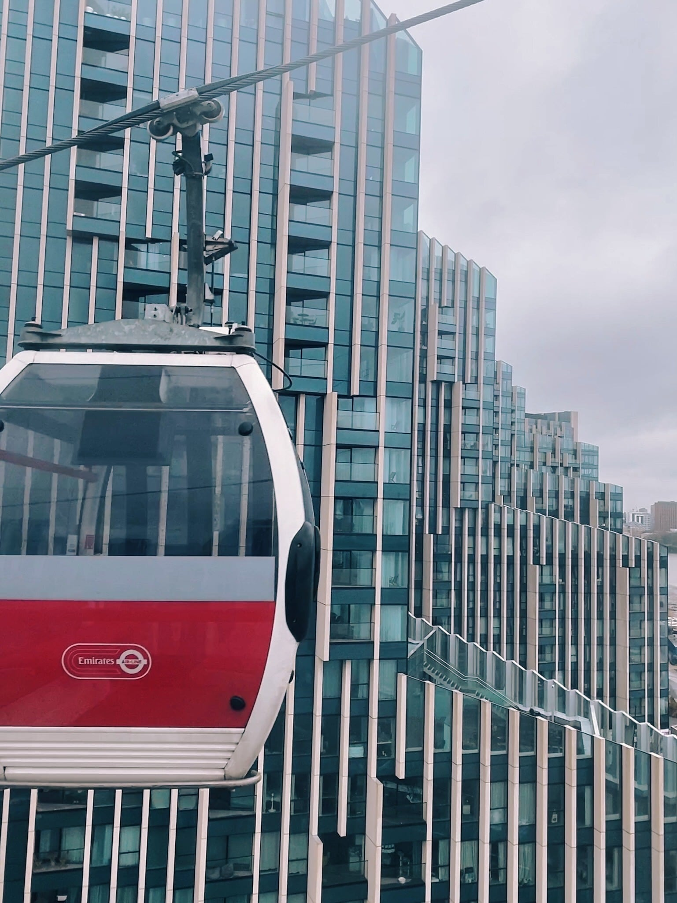
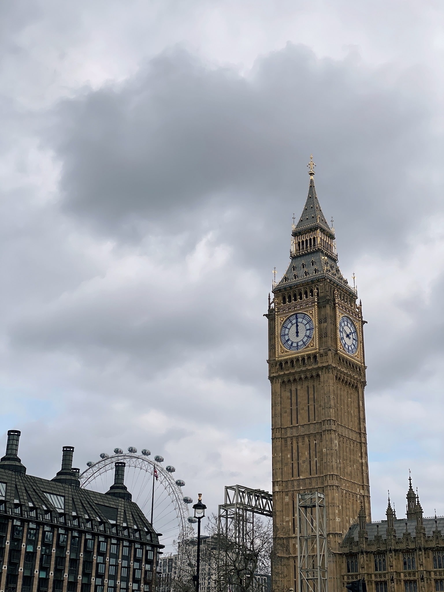

Ahoj!
Moje jméno je Alena Seimlová a jsem autorkou webové stránky, kterou práve čtete. Jsem 25ti letá holka z Českých Budějovic a miluju cestování a fotografování. Pokud byste rádi vycestovali z České Republiky, mám tu pro Vás pár tipů na krásná místa, které mohu z vlastní zkušenosti doporučit. Naleznete tu i fotografie mnou pořízené. :)
Švýcarsko
Ve Švýcarsku jsem sice strávila pouhé 4 dny, ale i tak jsem stihla navštívit pár krásných míst. Co bych určitě doporučila je hlavní město Curych a pak menší, pár kilometrů vzdálené, městečko Luzern. Jestliže chcete ve Švýcarsku vyrazit k jezerům, určitě si zapamatujte místo nesoucí název Oeschinsee. Na tomto jezeru si můžete dokonce pronajmout lodičku a udělat tak skvělé instragramové fotky.

 

Itálie
Při letním roadtripu jsem projela celkem 3 města v Itálii. Milán, Verona a Benátky. Co 100%
doporučuji je katedrála Narození Panny Marie, která je pátá největší katedrála na světě. Na co v Itálii určitě nesmíte
zapomenout je dát si italskou pizzu a Benátky si projdětě pěšky. Lodní doprava je drahá a na veškerá místa se dá krásně
dojít chůzí za pár minut.
 



Anglie
Do Anglie, přesněji do hlavní města Londýn, jsem vyrazila na jaře roku 2022 s mojí kamarádkou. Měly jsme pouhý 2 dny na
to projít celé město. V Londýně je řada úchvatných památek, které určitě stojí za návstěvu. London Eye, Big Ben a nebo
projížďka v klasickém červeném autobusu zvaný "Double-decker", to vše musíte v Londýně vidět a zažít !!! :)


